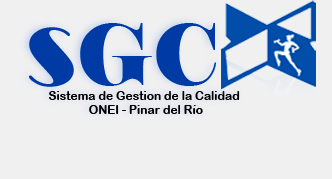

<div id="welcome">
    <div class="col">
        <div id="search">
        </div>
        <div id="centro">
            <div>
                <p><strong>Estimado visitante, un saludo cordial antes de que inicie su recorrido
                        por la Intranet de la Oficina Nacional de Estadística e Información    en la
                        provincia de Pinar del Río, Cuba, un proyecto concebido por los    especialistas de informática de dicha institución.</strong></p>
                <table cellspacing="2" style="border: 1px solid rgb(204, 204, 204); width: 120px; height: 90px; margin-left: 8px; float: right;">
                    <tbody>
                        <tr>
                            <td style="border: 1px solid rgb(246, 246, 246);">
                                </td>
                        </tr>
                        <tr>
                            <td align="center" style="border: 1px solid rgb(250, 250, 250); font-family: Verdana,Arial,Helvetica,sans-serif; font-size: 10px; margin:2px; ">
                                <strong>
                                    <span style="color: rgb(155, 155, 155);">Eficiencia es Calidad</span></strong></td>
                        </tr>
                    </tbody>
                </table>
                <p>¿Qué puede ofrecerle este sitio que lo haga diferente de otros?</p>
                <p>Para comenzar, este no es un sitio complicado y se ha desarrollado sobre la
                    base de ofrecer la mayor cantidad de facilidades de uso y acceso a los visitantes
                    y a las personas que publican contenido en el mismo o lo administran. En correspondencia
                    con la máxima planteada, el uso del sitio no requiere de conocimientos    avanzados de
                    informática o Internet y para administrarlo ni siquiera    exige a las personas
                    encargadas de ello que conozcan diseño o desarrollo    web para operarlo una vez
                    que está en marcha.</p>
                <p>Esperamos brindarle una propuesta de excelencia, diseño y funcionalidad.</p>
                <p><strong>Sobre nuestros contenidos</strong></p>
                <p>A través de nosotros conocerá la historia de nuestra delegación,
                    quiénes somos y nuestra misión, nuestras atribuciones y funciones,sobre el Sistema Estadístico Nacional (SEN) y sobre registros y clasificadores.    También conocerá las últimas novedades sobre eventos, premios    y otros sucesos acaecidos en nuestra delegación.</p>
                <p>De nuestra provincia, la más occidental del país, conocerá
                    datos estadísticos actualizados con regularidad sobre:</p>
                <ul>
                    <li>Territorio y medio ambiente.</li>
                    <li>Población.</li>
                    <li>Población residente.</li>
                    <li>Indicadores demográficos.</li>
                    <li>Comercio interno.</li>
                    <li>Producción agropecuaria.</li>
                    <li>Producción industrial.</li>
                    <li>Construcción.</li>
                    <li>Transporte.</li>
                    <li>Turismo.</li>
                    <li>Educación.</li>
                    <li>Salud pública.</li>

                    <li>Cultura y recreación.</li>
                </ul>
                <p><strong>Comentarios y sugerencias de nuestros visitantes, actualizaciones y    mejoras</strong></p>
                <p>“Nuestro trabajo nunca se termina y nuestro sitio nunca está terminado”.
                    Este paradigma es especialmente cierto en un sitio como el nuestro.</p>
                <p>Muchas de las mejoras implementadas en este sitio son directamente atribuibles
                    a los valiosos comentarios de nuestros visitantes. Nosotros apreciamos y agradecemos
                    todos sus comentarios, consultas, sugerencias y nuevas ideas conducentes a perfeccionar
                    nuestro producto. Por favor, dirija sus comentarios a
                    nuestro formulario de contacto.</p>
                <p>¡Gracias por su confianza y por visitarnos!</p>
                <p>Le reiteramos nuestro cordial saludo,</p>
                <p>El equipo de la Oficina Nacional de Estadística e Información
                    en la provincia de Pinar del Río, Cuba.</p>
            </div>
        </div>
    </div>    
</div>
